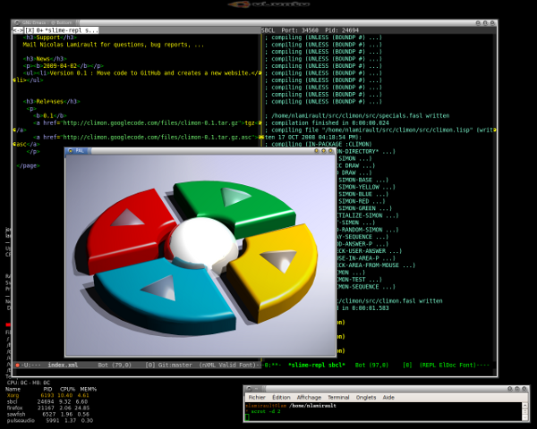

Climon is a Simon game, see Simon Wikipedia . It is developed on Debian GNU/Linux , using SBCL .
climon was written by Nicolas Lamirault and is available under a MIT style license.
Installation using asdf-install
*> (require 'asdf-install) *> (asdf-install:install 'climon)
Manual Installation
Download a climon tarball or checkout source code from GitHub :
$> git clone git://github.com/nlamirault/climon.git
climon needs pal, and their dependencies.
ASDF is used for compilation. Register the .asd file, e.g. by symlinking it, then compile climon using asdf:operate.
$ ln -sf `pwd`/climon.asd /path/to/your/registry/ * (asdf:operate 'asdf:load-op :climon)
Usage
Start Climon using an usernane in a Lisp session :
* (climon:climon)
Creates a Climon executable and launch the game :
$> make exe [...] $> /tmp/climon-0.1
- Keys :
- space : start a new game
- r : push Red button
- y : push Yellow button
- b : push Blue button
- g : push Green button
- q : Quit Climon
Screenshots
Climon 0.1 :
Support
Mail Nicolas Lamirault for questions, bug reports, ...News
2009-04-02
- Version 0.1 : Move code to GitHub and creates a new website.